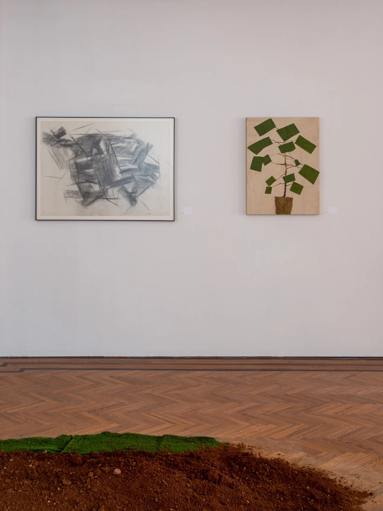

Exhibitions / 2024Spiritual Presence
Spring Renewal II
春焕Ⅱ

The story
Plants become a living language between land, body and memory.
Drawing on botanical forms, Mao Mao explores Eastern female vitality, ecological coexistence and cross-cultural perception. Rooted in tradition yet open to the future, the exhibition considers the subtlety, resilience and transformative energy of contemporary female experience.
- Artists & collaborators
- Mao Mao
- From the archive
- The Parrot 2026 · pp. 12, 25, 26

